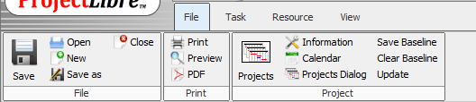
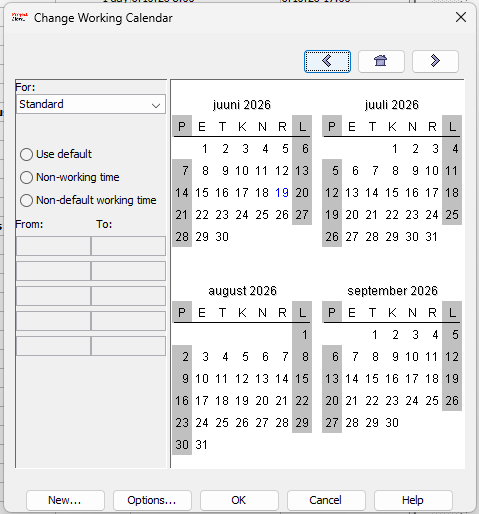
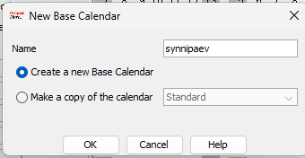
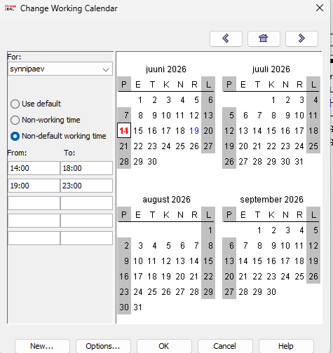
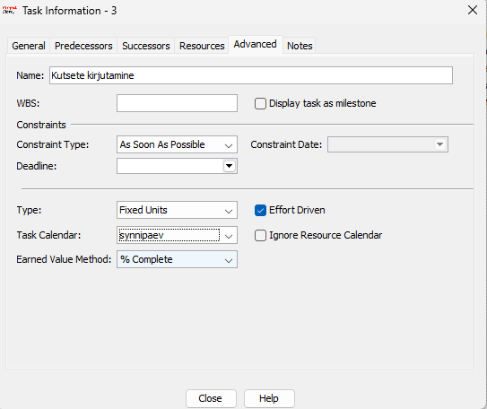
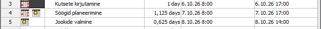

Ava Change Working Time
Mine menüüreale Project → Change Working Time. See avab akna, kus saad hallata kõiki projekti kalendreid.

Project vahekaardil grupis Properties.Tutvu Change Working Time aknaga
Avaneb aken, kus kuvatakse praegune standardkalender. Saad näha tööpäevi, puhkepäevi ja erandeid. Vaikimisi on tööaeg 08:00–12:00 ja 13:00–17:00.

Loo uus kalender
Klõpsa nupul Create New Calendar…. Avaneb dialoog, kus saad sisestada kalendri nime ja valida, kas luua täiesti uus kalender või koopia olemasolevast. Vali Make a copy of Standard ja klõpsa OK.

Määra tööajad ja kordumismuster
Vali sakk Exceptions ja lisa erand nimega (nt Õhtune tööaeg). Klõpsa Details… nupul. Saad määrata täpsed kellaajad, kordumismustri (nt iganädalaselt E–R) ning kehtivusperioodi.
Näites on tööajad 14:00–18:00 ja 19:00–23:00, kordub iganädalaselt esmaspäevast reedeni kuni 30.06.2026.

Rakenda kalender ülesandele
Tee topeltklikk ülesandel, et avada Task Information. Mine vahekaardile Advanced. Vali Calendar rippmenüüst uus loodud kalender (nt New Calendar).

Tulemus – muutunud ajakava
Pärast uue kalendri rakendamist on ülesannete algus- ja lõpuajad muutunud. Näites on UI/UX ja disaini ploki ülesanded alanud kell 14:00 ja lõppenud 23:00 – vastavalt uuele tööajale.
